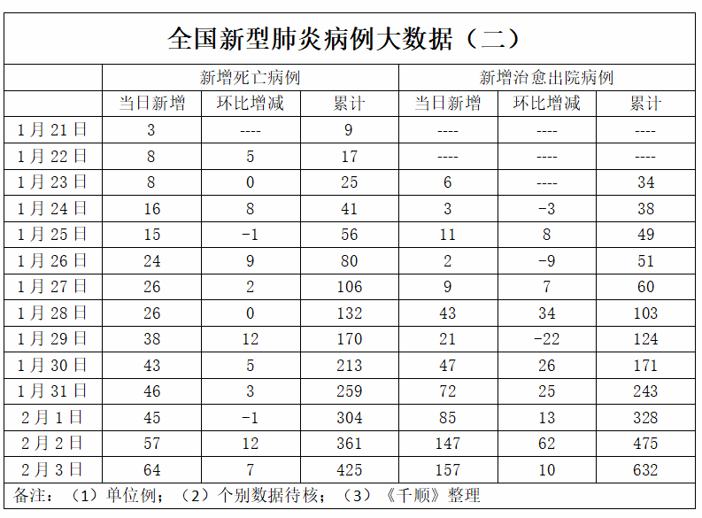
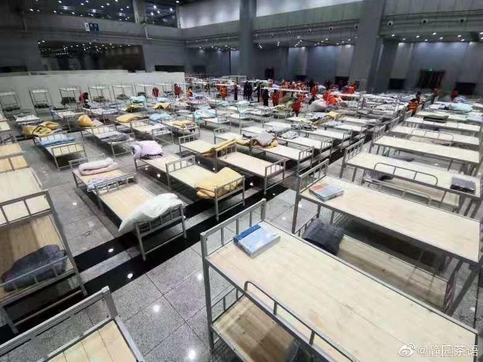
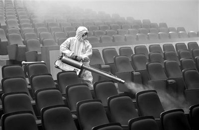

湖北抗击肺炎疫情这一周：防控措施如何升级
原文链接 备份链接 【财新网】（记者 张帆）1月24日中午12点左右，作为疫情爆发中心地的湖北省姗姗启动重大突发公共卫生事件一级响应。而在此之前，从1月23日起，已有浙江、广东、湖南、北京、上海、天津、安徽、重庆、四川等多个省份启动一级 …

非常时期，武汉成了全国人民挂念、祈福的城市。封城后，武汉人民的真实生活是什么样？
正和岛自1月26日起特别推出《叶青：我在武汉疫区的第N天》专栏。叶青是一位定居武汉40年的市民，也是一名学者和官员。接下来的一段时间，他会用笔记录下亲身经历的、观察到的武汉，为此他还专门外出到大街上、到超市里，获得一手真实的信息。
这将是一份宝贵的史料。感谢他，我们得以更真切地感知到武汉疫情。让我们一起为武汉加油！
作者：叶青 中南财经政法大学教授、博导 湖北省统计局副局长 正和岛蓝色岛邻
来源：正和岛案例（ID：zhenghedaoanli）

数字
3日，正月初十。阴天。
3日，全国新增确诊病例3235例（湖北省2345例），新增死亡病例64例（湖北省64例）。
截至3日，全国累计报告确诊病例20438例，累计死亡病例425例，累计治愈出院病例632例，现有疑似病例23214例。

3日，湖北省新增病例2345例（其中：武汉市1242例、黄石市71例、十堰市35例、襄阳市84例、宜昌市60例、荆州市114例、荆门市55例、鄂州市26例、孝感市202例、黄冈市176例、咸宁市52例、随州市183例、恩施州12例、仙桃市19例、天门市2例、潜江市9例、神农架林区3例）。
全省新增死亡64例（其中：武汉市48例、襄阳市1例、宜昌市2例、荆州市1例、荆门市3例、鄂州市3例、孝感市3例、黄冈市2例、随州市1例）。
截至3日，湖北省累计病例13522例（其中：武汉市6384例、黄石市405例、十堰市291例、襄阳市632例、宜昌市452例、荆州市613例、荆门市400例、鄂州市332例、孝感市1120例、黄冈市1422例、咸宁市348例、随州市641例、恩施州123例、仙桃市188例、天门市117例、潜江市44例、神农架林区10例）。
死亡414例(其中：武汉市313例、黄石市2例、襄阳市1例、宜昌市3例、荆州市7例、荆门市14例、鄂州市18例、孝感市17例、黄冈市19例、随州市6例、仙桃市3例、天门市10例、潜江市1例)。
除了关注新型肺炎的数据外，我们还要关注股市的数据。一样的会记入历史。
3日（周一），上证指数报2746.61点，跌7.72%，创四年来最大单日跌幅；深证成指报9779.67点，跌8.45%；创业板指报1795.77点，跌6.85%。截止收盘，A股跌停个股接近3200只，近3600只个股下跌，两市上涨个股仅有164只，涨停84只。
有卖就有买。多只认沽期权涨幅超10倍，沪深股通今日累计净买入181.91亿元，为历史第二大单日净买入规模。
但是，上证报综合主流保险机构提供的内部数据显示，仅周一一天之内，约有百亿保险资金已抄底入市。多家大型保险机构还向权益投资经理发出内部指令：周一不能净卖出。大型保险机构内部一致认为，A股的长期走势并不因短期冲击而改变，上证指数2800点下方是长期投资者的好买点。
可见，大家对于中国经济还是充满信心的。

湖北武汉成为重中之重
3日，中共中央政治局常务委员会会议明确：湖北省特别是武汉市仍然是全国疫情防控的重中之重。要进一步完善和加强防控，严格落实早发现、早报告、早隔离、早治疗措施，加强疫情监测，集中救治患者，对所有密切接触人员采取居家医学观察，完善和强化防止疫情向外扩散的措施。
十天之间的两次常委会，都是武汉的事。
1月25日，正月初一，中共中央政治局常务委员会召开会议，做出两项重大决定：
一是党中央成立应对疫情工作领导小组，在中央政治局常务委员会领导下开展工作。
二是党中央向湖北等疫情严重地区派出指导组，推动有关地方全面加强防控一线工作。
相隔十天的会议，对湖北新型肺炎控制起到了重要的作用。
这其中一位指挥者功不可没。
3日，《湖北发布》发表文章《14天督战一线！70岁女副总理的“防疫时间轴”》很是感人。
孙春兰是副总理，是中央应对新型冠状病毒感染肺炎疫情工作领导小组成员，是中央指导组负责人，她也是一位70岁的老人。
这是她的行程：
1月22日，孙春兰来到武汉检查指导新型冠状病毒感染的肺炎疫情防控工作。
1月23日、24日，孙春兰连续召开国务院应对新型冠状病毒感染的肺炎疫情联防联控工作机制会议。
1月27日，孙春兰随同李克强在武汉考察。
1月28日，孙春兰率中央指导组听取湖北省疫情防控工作情况汇报。
1月29日，孙春兰率领中央指导组指导湖北医用物资保障工作。
1月30日，孙春兰率中央指导组在武汉市看望慰问奋战在一线的医护人员。
2月1日，在湖北孝感孝南区杨店镇浐川村，孙春兰看望值守的村干部。
3日，孙春兰率中央指导组实地察看火神山医院设施设备等情况。
……
看到这篇报道，才知道她一直在湖北靠前指挥。
国内最有名的传染病、病毒研究的院士都当过武汉前线指挥，或者在武汉工作。这也是让人放心的。武汉虽然有中科院病毒研究所，力量还是不够。
去年新晋中国工程院院士、女少将陈薇已投入武汉抗击疫情一线。

3日，七旬李兰娟院士带队抵达武汉，在武汉大学人民医院展开工作。
浙江有600多例确诊患者，但无一例死亡病例。
原因是浙江对疑似患者的隔离、检查做得比较严格，患者发现的比较多，一开始就对病人进行集中救治，危重症病人全部送到传染病国家重点医院救治，形成一套有成效的经验，比如人工肝系统，微生态调节和“四抗二平衡”的救治策略。这些经验对武汉很有用。
经中央军委批准，根据中部战区命令，驻鄂部队抗击疫情运力支援队2日正式抽组成立，开始承担武汉市民生活物资配送供应任务。
这个运力支援队共130辆军用卡车、260多名官兵，从2日起，他们将根据地方配送中心的每日需求，派出运输力量保障武汉市民生活物资配送。主要从空降兵、空军武汉基地、陆军勤务学院训练基地等驻军部队和军事院校中临时抽调。
关键时候，还是靠亲人解放军。

**集中隔离出新招
**
3日晚，武汉市在江汉区、武昌区和东西湖区建设“方舱医院”，用于收治新型冠状病毒感染的肺炎轻症患者。

这三处“方舱医院”，位于武汉国际会展中心（1000张床位）、洪山体育馆（800张）、武汉客厅（A区1000张床位，B区、C区各500张床位）。
“方舱医院”建成后，医护人员从全市抽调，收治的病人将以轻症为主，即检测呈阳性但无症状或症状不明显的病人。患者症状一旦转重，将及时转入金银潭医院继续治疗。
所谓“方舱医院”，是解放军野战机动医疗系统的一种，在各种应急救治中也有广泛使用。“方舱医院”一般由医疗功能单元、病房单元、技术保障单元等部分构成，是一种模块化卫生装备，具有紧急救治、外科处置、临床检验等多方面功能。

武汉的集中隔离，做得紧锣密鼓。全省也采用集中隔离的办法。
2日上午，省新型冠状病毒感染肺炎疫情防控指挥部召开会议强调，坚决按照“四集中”要求，对所有疑似患者集中隔离。
3日，按照市防疫指挥部要求，全市城管、卫健、市场等多部门联合开展城市消毒工作。重点围绕医院、市场、社区、公共厕所、环卫设施等重点区域，研究制定了分类消毒方法，按照“属地管理、全民参与、科学规范”的原则，持续开展消毒，严控疫情。

到了消毒这个阶段，就是打歼灭战的时候，应该就是把握比较大的阶段。

不准动车
3日下午，我的手机收到短信：
【武汉交警】为防止疫情扩散，进一步落实市新型肺炎防控指挥部9号令精神，武汉交警再次提醒广大私家车主，对非参加疫情防控工作，非参与民生保障工作，非因看病就医或工作、生活急须使用机动车的，一律不得上路行驶。其它确有急须的，可先通行，后由社区或单位出具证明。交管部门将应用”智慧交通”系统和执勤检查，对短信已经告之不能出行的车辆和随意驾车出行予以劝阻，对不听劝阻、飙车等违法行为予以查处。
看来在14日上班之前，都不能用车了。好在也没有什么要用车的地方。

要吸取的教训太多了
3日的中共中央政治局常务委员会会议指出，这次疫情是对我国治理体系和能力的一次大考，我们一定要总结经验、吸取教训。
在人财物方面，一定会有一次大的整理。
在财政学界，已经有一个群，在研究新型肺炎的财政应对之策。他们问我的建议，我觉得应该建立一种政府储备式采购制度。对相关企业下储备式订单，要求企业在一定时间内提供多少口罩、防护服等。
在公共卫生安全方面，我在这里提三点建议。
一是各级领导层要增强健康意识。
省市县各级领导圈中，要配备医疗专家型的干部，可以承担各级副职，分管医疗卫生，比如，副省长、副市长、副县长。
此次发生在武汉的疫情，最大的痛点就是信息失真。一般人这样说，另一般人那样说，最后是钟南山院士一锤定音。疫情的传导系统紊乱。
我们现在有金融副省（市）长，在防范金融风险、保障资金需求方面起到了巨大的作用。能不能也设立公共卫生安全副省（市县）长呢？现在大多是一个副省（市、县）长分管文教卫生体育科技，而且党外干部居多。一方面，事务太繁杂，难以理清头绪，另一方面，大都不是医科科班出身，专业上比较欠缺，只能是边学边干，自学成才。这往往会贻误战机。人们常说的“隔行如隔山”就是这个道理。
二是卫健委主任要进行半年以上的培训。
当卫健委主任，不懂基本医学，是很可怕的事情。
黄冈市卫健委主任“一问三不知”，就是一个案例。
在全国还有多少这样不懂医的卫健委主任？因此，我建议各级非医科毕业的卫健委主任到专业院校学习半年再上岗。
比如，华中科技大学同济医学院公共卫生学院，设有公共卫生与预防医学一级学科博士点和一级学科硕士点、博士后流动站，在中国教育部2012年公布的一级学科评估中排名第1，是中国一级学科重点学科。
各省可以找类似的学校作为培训基地。
三是各级政府设立健康卫生专家委员会。
我们知道，各级政府都聘请专家，组成经济发展、招商引资委员会；还应该组建卫生健康委员会，多听听这方面专家的意见。建议请上一级，即省聘请全国的专家，但一个专家不能超过两个省；地级市聘请省内专家；县市聘请地级市的专家。

阿里与腾讯
17年前，当时还是“中小企业”的阿里巴巴遭遇“非典”。
2003年5月初，同事宋洁从广州回杭办公后出现感冒发烧。
宋洁作为“疑似病例”被送到定点医院隔离，杭州所有员工回到住处自我隔离。在几个小时内，所有的人拿了钱就去买东西，把电脑带回家，拉网线，买桌子生活用品等，准备回家办公。
公司联系了电信部门，派出技术保障同学，确保每位同事家里都能联网和接入公司系统。
大家都隔离在住处，一天三餐都是别人送过来的，外面有一个锁，把里面的人锁起来。

大家的心态很好，遇到危机时的第一反应就是客户第一——“我们可能被关起来，但是，客户的服务不能中断。”
“非典”一战后来也沉淀为阿里文化的一部分，每年5月10日举办阿里日活动，邀请员工家人一起欢聚，就是为了纪念这次共同战斗的经历和精神。
有的专家说，没有“非典”，阿里不会这么强大。
今天，腾讯是最大的赢家。
今年春节，全国线下公共娱乐场所暂时关闭，无聊成为过年期间内心写照，每天体验卧室-餐厅-厕所之间的多次旅游路线，大家只能在家里刷手机、打游戏、追剧来排解内心。
多名游戏观察人士表示，春节期间休闲娱乐游戏、策略经营游戏、竞技游戏、动作游戏等下载量、在线人数屡创新高。
据国金证券旗下传媒与互联网研究团队公开表示：“经与相关产品和渠道方确认，春节期间《王者荣耀》的峰值DAU在1.2-1.5亿，再创历史新高，而在大年三十（1月24日）当天的流水为20亿元左右，去年同期流水为13亿元；《和平精英》的峰值DAU在0.8-1.0亿，也创下历史新高；《阴阳师》的峰值单日流水也接近1亿元。”
根据市场研究机构App Annie 数据显示，今年1月20日至26日期间中国游戏市场下载前五名的游戏分别为《和平精英》《王者荣耀》《剑与远征》《QQ飞车》与《三国志战略版》（iPhone+Android合计），其中腾讯占据三席，莉莉丝与阿里各占其一。
2月3日开盘之后，腾讯控股开盘一度由378港币下跌至369港币之后反弹，盘中最高一度高达383.2港币/股，截止收盘，腾讯控股报380港币/股，涨幅1.88%。
真是“几家欢乐几家愁”。

小结
武汉成为这场战役的重中之重。
全国的人财物流向武汉、流向湖北；
有副总理坐镇武汉，大家充满信心；
体育馆、展览馆……成为病人的方舟；
国家要总结经验、吸取教训，企业也是一样的。
作者：叶青，1962年3月出生，第十、十一届全国人大代表、国务院新闻办专家库专家，曾任中国民主促进会湖北省委员会副主任委员（2000-2017）。他被网民称为“中国最具个性官员”、“车改第一人”，曾荣获2007年度人民网十大社会责任博客、南方周末2011年两会“十大言者”、《南风窗》2012年十大公益人物、2019政务微博十年·先锋等等。
原文链接 备份链接 【财新网】（记者 张帆）1月24日中午12点左右，作为疫情爆发中心地的湖北省姗姗启动重大突发公共卫生事件一级响应。而在此之前，从1月23日起，已有浙江、广东、湖南、北京、上海、天津、安徽、重庆、四川等多个省份启动一级 …
原文链接 备份链接 1月30日，曾患新型冠状病毒感染的肺炎的北京大学第一医院呼吸和危重症医学科主任王广发在北京地坛医院治愈出院。他是北京市第5名治愈出院的新型冠状病毒感染的肺炎患者。新华社发（任超 摄） 采访·整理 秦珍子 编辑 张国 国 …
原文链接 备份链接 02.02.2020本文字数：1995，阅读时长大约3.5分钟 导读：随着送检加快，黄冈今天确诊病例还将继续大增，但医药物资短缺等客观形势下，防控形势十分严峻。 作者 | 第一财经 陈益刊 紧邻武汉的湖北省黄冈市，新 …
原文链接 备份链接 非常时期，武汉成了全国人民挂念、祈福的城市。封城后，武汉人民的真实生活是什么样？ 正和岛自1月26日起特别推出《叶青：我在武汉疫区的第N天》专栏。叶青是一位定居武汉40年的市民，也是一名学者和官员。接下来的一段时间，他 …
原文链接 备份链接 我希望是能从个人角度，发掘一些不一样的故事。 文 | 应 琛 1月29日，大年初五，这一天本是中国人烧香拜财神的吉日。往年，在武汉归元寺，纷至沓来的祈福人群让这里香火缭绕，成为武汉过年的盛景之一。如今，一切落入寂静。 …